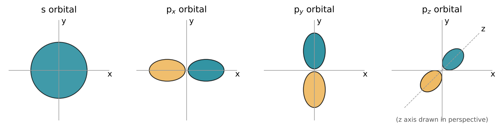
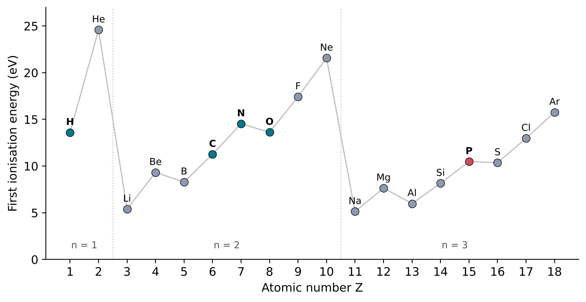
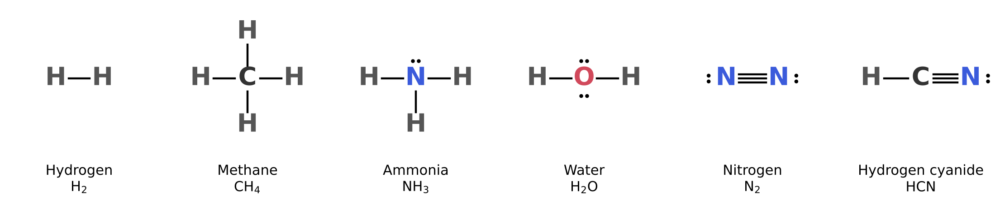
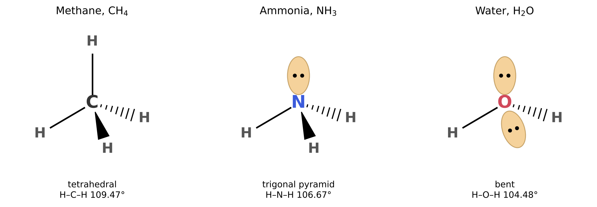

3 Electrons and Bonds
The question of this chapter
Two hydrogen atoms and one oxygen atom combine into a molecule of water, but helium atoms combine with nothing at all. Carbon forms four bonds, nitrogen three and oxygen two. This chapter asks: why do atoms join together, and what decides how many bonds each one forms? The answer lies in the arrangement of the electrons around the nucleus, and in particular in the electrons of the outermost shell.
3.1 Electrons in shells
Energy levels
The electrons of an atom cannot have any energy whatever. They occupy a set of separate, fixed energy levels, determined by their attraction to the positive nucleus and their repulsion from one another. This is a result of quantum mechanics, and it can be confirmed directly: atoms absorb and emit light only at particular wavelengths, which correspond to the energy differences between their levels.
Energies on the scale of single atoms are conveniently measured in electronvolts (eV). One electronvolt is the energy gained by a particle carrying one elementary charge when it moves through an electric potential difference of one volt; it equals exactly 1.602 176 634 × 10−19 J (National Institute of Standards and Technology, n.d.-a).
Shells, subshells and orbitals
The region around the nucleus in which an electron of a given energy is likely to be found is called an orbital. An orbital is not a path. An electron in an atom does not travel along a fixed track; the orbital describes only where it is likely to be.
Orbitals are grouped into shells, numbered n = 1, 2, 3, and so on outwards from the nucleus. Electrons in higher shells are, on average, farther from the nucleus and less tightly held. Each shell is divided into subshells, labelled s, p, d and f: the first shell contains only an s subshell, the second contains s and p, and the third contains s, p and d. An s subshell has one orbital, which is spherical; a p subshell has three, each with two lobes on opposite sides of the nucleus, pointing along three perpendicular directions (Figure 3.1).

How many electrons fit
Each orbital can hold at most two electrons. This rule, the Pauli exclusion principle, follows from a property of electrons called spin, which can take one of two values, often written “up” and “down”; two electrons can share an orbital only if their spins are opposite. It follows that an s subshell holds up to 2 electrons and a p subshell up to 6. The first shell, with only an s subshell, is full with 2 electrons. The second shell, with one s and three p orbitals, is full with 8.
Electron configurations
The electron configuration of an atom lists how many electrons occupy each subshell, written as the subshell label with the number of electrons as a superscript. In the most stable state of an atom, its ground state, electrons fill the lowest available levels first: 1s, then 2s, 2p, 3s and 3p. Table 3.1 gives the configurations of the elements that matter most in this book.
| Element | Z | Electron configuration | Valence electrons |
|---|---|---|---|
| Hydrogen | 1 | 1s1 | 1 |
| Helium | 2 | 1s2 | 2 (full shell) |
| Carbon | 6 | 1s2 2s2 2p2 | 4 |
| Nitrogen | 7 | 1s2 2s2 2p3 | 5 |
| Oxygen | 8 | 1s2 2s2 2p4 | 6 |
| Neon | 10 | 1s2 2s2 2p6 | 8 (full shell) |
| Sodium | 11 | 1s2 2s2 2p6 3s1 | 1 |
| Phosphorus | 15 | 1s2 2s2 2p6 3s2 3p3 | 5 |
| Chlorine | 17 | 1s2 2s2 2p6 3s2 3p5 | 7 |
Valence electrons
The electrons in the outermost occupied shell are called valence electrons. They are the electrons farthest from the nucleus and the least tightly held, and they are the ones that take part in chemical bonding. The inner electrons, held close to the nucleus, are hardly affected by chemical reactions.
The periodic table (Chapter 2) is organised by valence electrons. Elements in the same group have the same number of valence electrons and therefore similar chemistry. Nitrogen and phosphorus both have five; oxygen and sulfur both have six. This is the explanation, in terms of atomic structure, of the regularity that nineteenth-century chemists observed.
3.2 Why atoms bond
Measuring how tightly electrons are held
The energy needed to remove one electron from a neutral atom in its ground state is called the first ionisation energy. It measures how tightly the atom holds its outermost electron, and it can be measured precisely from the light that atoms absorb. Figure 3.2 shows the values for the first eighteen elements.

Two features stand out. The noble gases helium (24.59 eV), neon (21.56 eV) and argon (15.76 eV) hold their electrons more tightly than any other element in their rows. The elements that follow them, lithium (5.39 eV) and sodium (5.14 eV), hold their single outer electron most weakly (Kramida et al. 2024). An atom with a completely filled outer shell or subshell is unusually stable; an atom with one electron beyond a filled shell loses that electron easily.
The octet rule
This stability of filled shells explains much of chemistry. Atoms tend to react in ways that give each of them the electron arrangement of the nearest noble gas: two electrons in the first shell for hydrogen, and eight in the outermost shell for carbon, nitrogen, oxygen and their heavier relatives. The tendency to reach eight valence electrons is called the octet rule. It is a rule of thumb rather than a law, and it has exceptions, phosphorus among them, but it predicts correctly the bonding of most of the molecules in this book.
An atom can reach a noble-gas arrangement in two ways: by transferring electrons to or from another atom, or by sharing electrons with it. The first gives ionic bonds, the second covalent bonds.
3.3 Ionic bonds
A sodium atom has one valence electron, beyond the filled shells of neon. A chlorine atom has seven valence electrons, one short of the eight of argon. When sodium and chlorine react, each sodium atom transfers its outer electron to a chlorine atom:
\[ \text{Na} + \text{Cl} \rightarrow \text{Na}^{+} + \text{Cl}^{-} \]
Both ions now have noble-gas arrangements: Na+ that of neon and Cl− that of argon. The oppositely charged ions attract each other and pack together into a crystal. The attraction between oppositely charged ions is called an ionic bond. Ionic bonding is typical of compounds between a metal, which loses electrons easily, and a non-metal, which gains them readily.
Ionic bonds are not directional: each ion attracts every neighbour of opposite charge, whatever its direction. Ionic compounds therefore form extended crystals rather than separate molecules, and many dissolve in water, where the ions separate, as Chapter 5 explains.
3.4 Covalent bonds
How many bonds each atom forms
An atom forms as many covalent bonds as it needs electrons to complete its octet, or its pair in the case of hydrogen. This gives the characteristic number of bonds, or valence, of each element:
- hydrogen, with 1 valence electron, needs 1 more and forms 1 bond;
- oxygen, with 6, needs 2 more and forms 2 bonds;
- nitrogen, with 5, needs 3 more and forms 3 bonds;
- carbon, with 4, needs 4 more and forms 4 bonds.
These four numbers, 1, 2, 3 and 4 for H, O, N and C, are worth memorising: they decide the structure of every organic molecule. Methane, CH4, has one carbon atom bonded to four hydrogen atoms; ammonia, NH3, one nitrogen bonded to three; and water, H2O, one oxygen bonded to two.
Lewis structures
A Lewis structure is a drawing that shows how the valence electrons of a molecule are arranged. Each shared pair of electrons is drawn as a line between two atoms, and each unshared pair as two dots on the atom that carries it (Figure 3.3). An unshared pair of valence electrons, which belongs to one atom only, is called a lone pair. In water, the oxygen atom forms two bonds and carries two lone pairs; in ammonia, the nitrogen forms three bonds and carries one lone pair. Counting the electrons around oxygen in water, two shared pairs and two lone pairs, gives eight, an octet.

Lone pairs are not inert decoration. They give water and ammonia much of their chemical behaviour: a lone pair can accept a hydrogen ion, H+, as in the formation of the ammonium ion NH4+, and it can take part in the weak attractions called hydrogen bonds, described in Chapter 5.
Phosphorus: an exception that matters
Phosphorus has five valence electrons, like nitrogen, and in some compounds it forms three bonds, as the octet rule predicts. In phosphate and its compounds, however, the phosphorus atom is bonded to four oxygen atoms, and the usual Lewis structure draws five bonds to it: one double bond to oxygen and three single bonds. Atoms of the third period, such as phosphorus and sulfur, are commonly drawn with more than eight electrons around them in such structures. Whatever the details of the description, the facts are clear: the phosphorus atom of a phosphate group is bonded to four oxygen atoms arranged at the corners of a tetrahedron, and the group as a whole carries negative charge in water.
3.5 Double and triple bonds
Shorter and stronger
Each additional shared pair pulls the two atoms closer together. The three simplest compounds of carbon and hydrogen with two carbon atoms show this directly. In ethane, C2H6, the carbon atoms are joined by a single bond of length 1.536 Å; in ethylene, C2H4, by a double bond of 1.339 Å; and in acetylene, C2H2, by a triple bond of 1.203 Å (National Institute of Standards and Technology 2022).
Multiple bonds are also stronger. The strength of a bond is measured by the bond enthalpy, the energy needed to break the bond in the gas phase, given for one mole of such bonds (the mole is defined in Chapter 6). Table 3.2 gives some values. The triple bond of N2 is more than twice as strong as any of the single bonds in the table, which is why the nitrogen gas of the atmosphere is so unreactive.
| Bond | Molecule | Bond enthalpy (kJ mol−1) |
|---|---|---|
| H–H | H2 | 436.0 |
| C–H | CH4 (average of four) | 415.9 |
| O–H | H2O (average of two) | 463.5 |
| N\(\equiv\)N | N2 | 945.4 |
3.6 The shapes of molecules
Electron pairs keep apart
Molecules have definite three-dimensional shapes, and shape matters: it decides which molecules can fit against which, and therefore how they react and how they recognise one another. The shape of a small molecule can be predicted from one principle. The electron pairs around a central atom, both bonding pairs and lone pairs, repel each other and arrange themselves as far apart as possible. This is the valence shell electron pair repulsion (VSEPR) model.
- Four electron pairs point towards the corners of a tetrahedron, a solid with four triangular faces. The angle between any two of them is 109.47°.
- Three groups of electrons lie in a plane, at 120° to each other (trigonal planar). A double bond counts as one group.
- Two groups lie on opposite sides of the central atom, at 180° (linear).
Methane, ammonia and water
Methane, ammonia and water each have four electron pairs around the central atom, so all three are based on the tetrahedron (Figure 3.4). In methane all four pairs are bonds, and the molecule is a regular tetrahedron with H–C–H angles of 109.47°. In ammonia one pair is a lone pair; the three hydrogen atoms form a low pyramid, with H–N–H angles of 106.67°. In water two pairs are lone pairs, and the molecule is bent, with an H–O–H angle of 104.48° (National Institute of Standards and Technology 2022). Lone pairs spread out more than bonding pairs and push the bonds slightly closer together, which is why the angle shrinks from methane to water.

Flat and straight molecules
When the central atom has a double bond, the number of groups around it falls to three, and the molecule becomes flat. Formaldehyde, H2C=O, and ethylene, H2C=CH2, are planar, with angles close to 120°; in ethylene the measured angles are 117.6° for H–C–H and 121.2° for H–C–C (National Institute of Standards and Technology 2022). With two groups, as in carbon dioxide (O=C=O) and hydrogen cyanide (H–C\(\equiv\)N), the molecule is linear.
Hybrid orbitals, briefly
The tetrahedral shape of methane raises a puzzle: carbon’s valence electrons occupy one spherical 2s orbital and three 2p orbitals at right angles, none of which points to the corners of a tetrahedron. Chemists resolve this with the idea of hybrid orbitals, mathematical combinations of s and p orbitals that point in the directions of the bonds. A carbon atom forming four single bonds is described by four sp3 hybrids (tetrahedral); one forming a double bond by three sp2 hybrids (planar, 120°); and one forming a triple bond by two sp hybrids (linear, 180°). The labels sp3, sp2 and sp are used widely in chemistry as a shorthand for these three geometries of carbon.
3.7 Carbon, the element of chains and rings
The bonding rules of this chapter explain why carbon, rather than any other element, forms the backbone of the molecules of life. A carbon atom forms four bonds, more than any other light element, and it bonds strongly to other carbon atoms as well as to hydrogen, oxygen and nitrogen. Carbon atoms can therefore link into chains and rings of almost any length and shape, with other atoms attached at every position. The four bonds of each carbon point in different directions, so these chains and rings are three-dimensional.
Compounds built on frameworks of carbon atoms are called organic compounds, and their chemistry is organic chemistry. The name dates from a time when such compounds were thought to be made only by living organisms; since the nineteenth century they have been made in the laboratory from inorganic materials, beginning with Friedrich Wöhler’s synthesis of urea in 1828 (Wöhler 1828), and the name now refers only to their composition. The sugars, the nucleobases and RNA itself are all organic compounds. Chapter 4 shows how their structures are drawn, and Chapter 11 how their parts behave.
Key points
- Electrons occupy fixed energy levels, grouped into shells (n = 1, 2, 3, …) and subshells (s, p, d). Each orbital holds at most two electrons; the first shell is full with 2 electrons and the second with 8.
- Valence electrons, in the outermost shell, take part in bonding: H 1, C 4, N 5, O 6, P 5. Elements in the same group have the same number.
- Filled shells are especially stable, as shown by the high ionisation energies of the noble gases. Atoms tend to reach a noble-gas arrangement (the octet rule).
- In an ionic bond, electrons are transferred, and oppositely charged ions attract each other. In a covalent bond, a pair of electrons is shared between two atoms.
- Hydrogen forms 1 covalent bond, oxygen 2, nitrogen 3 and carbon 4. Lewis structures show bonds as lines and lone pairs as dots.
- Double and triple bonds share two and three pairs; they are shorter and stronger than single bonds (C–C 1.536 Å, C=C 1.339 Å, C\(\equiv\)C 1.203 Å). The N\(\equiv\)N bond, 945.4 kJ mol−1, makes nitrogen gas unreactive.
- Electron pairs around an atom keep as far apart as possible (VSEPR). Four pairs give tetrahedral directions: methane is tetrahedral (109.47°), ammonia pyramidal (106.67°) and water bent (104.48°). Three groups give planar molecules, two give linear ones.
- Carbon’s four bonds and its strong bonds to itself allow chains and rings: the basis of organic chemistry.
Self-test
- Write the electron configuration of sulfur (Z = 16) and state how many valence electrons it has. Which element of Table 3.1 is in the same group?
- Explain, using Figure 3.2, why sodium readily forms the ion Na+ but not Na2+.
- Draw the Lewis structure of hydrogen sulfide, H2S, and predict its shape.
- Draw the Lewis structures of formaldehyde (H2CO) and hydrogen cyanide (HCN). What is the bond order of the carbon-oxygen bond and of the carbon-nitrogen bond?
- Predict the number of bonds formed by each atom in methanol, CH3OH, and sketch its structure.